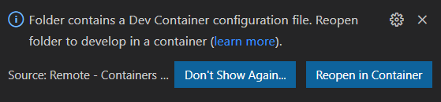

devcontainer command line interface
The Remote-Containers extension has a devcontainer command line interface (CLI) which allows you to interact with a dev container from your terminal.
Installing the devcontainer CLI
To install the devcontainer CLI:
Ensure you have the latest version of the Remote-Containers extension installed (must be at least
v0.188.0).Launch Visual Studio Code and select Remote-Containers: Install devcontainer CLI from the Command Palette (
kbstyle(F1)).
- Windows: You will be prompted to automatically add the devcontainer CLI to your
PATHor to copy the devcontainer CLI path to your clipboard for you to add to yourPATH. - macOS/Linux: If the extension detects a
binfolder (or.local/binfolder) in your user home folder and in yourPATH, then you will have the option of adding a symlink to the devcontainer CLI to this location. You will also have the option to copy the devcontainer CLI path to your clipboard for you to add to yourPATH.
From an external terminal (one not inside Visual Studio Code), run
devcontainer --helpto test the installation and see the CLI's built-in help. Note that you may need to restart your shell forPATHchanges to take effect.$ devcontainer --help devcontainer <command> : devcontainer open [path] Open a dev container in VS Code devcontainer build [path] [options] Build a dev container image Options: -h, --help Show help [boolean]
Opening a folder directly within a dev container
Visual Studio Code has many command line options, including code . that opens Visual Studio Code with the current folder. When you do this with a folder containing a dev container, Visual Studio Code will prompt you to reopen the folder within a dev container.

With the devcontainer CLI, you can use the devcontainer open command to open the current folder straight into dev container mode, skipping the prompt.
You can optionally specify the path to the folder to open, for example devcontainer open ~/source/my-folder to open the ~/source/my-folder folder within a dev container.
Building a dev container image
The devcontainer build command allows you to build the dev container image for a folder. As with the open command, build accepts a path to the folder to build the image for and defaults to the current working folder in your shell. For example, devcontainer build will build the dev container image for the current folder and devcontainer build ~/source/my-folder will build the container image for the ~/source/my-folder folder.
devcontainer CLI build options
The following options can be used with the build command:
--no-cache: By default, building a Docker container image reuses layers from previous image builds. The--no-cacheoption prevents the cache being used and forces the image to be rebuilt.--image-name: The Remote-Containers extension typically determines its own name for the images it builds. You can specify the name to use for the built image using the--image-nameoption.
Visual Studio Code Insiders
You can install the CLI for the Stable and Insiders builds of Visual Studio Code side-by-side. The Insiders CLI will be devcontainer-insiders, so use this in place of devcontainer in the steps above.
Next steps
- Create a Development Container - Create a custom container for your work environment.
- Advanced Containers - Find solutions to advanced container scenarios.
- devcontainer.json reference - Review the
devcontainer.jsonschema.